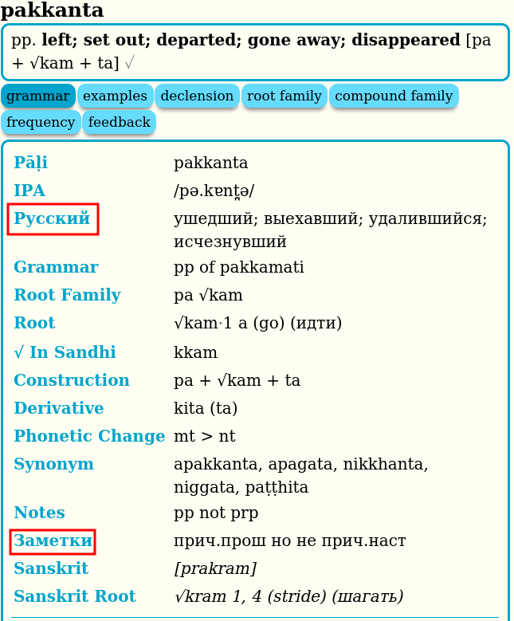
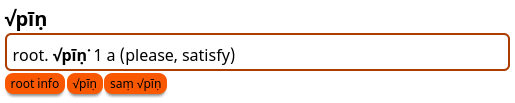
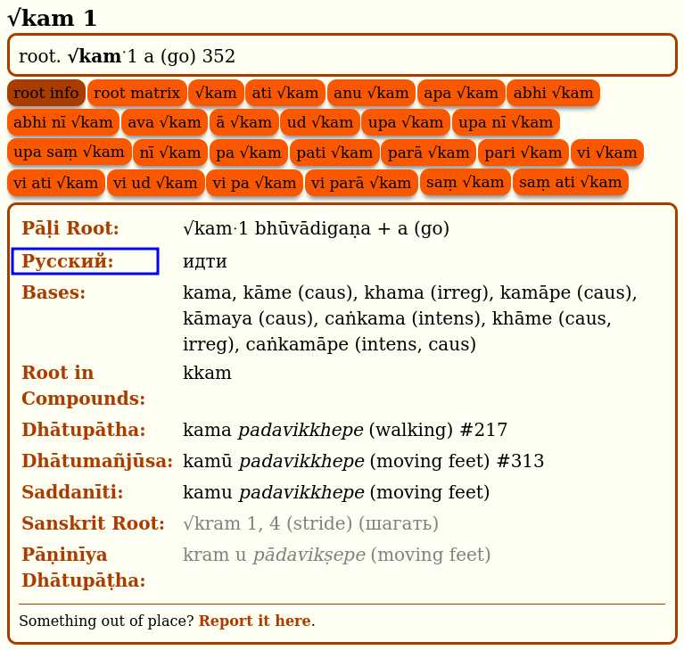
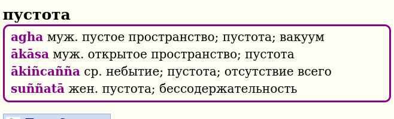
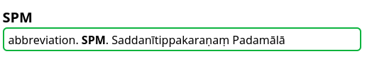
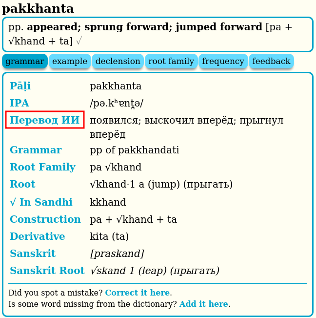

Совмещенная версия DPD Английский + Русский
DPD+RUS содержит пять различных словарей
Словарь палийского языка на анлийский (синий)

В разделе "grammar" добавлен русский перевод. Щелкните на "Русский", "Перевод ИИ" или "Заметки", чтобы перейти на страницу отзывов, где можно сообщить об ошибке или внести предложение в русскую часть DPD.

Словарь корней палийского языка (оранжевый)

В разделе "root info" добавлен русский перевод смысла корней на Пали и Санскрите. Щелкните на "Русский", чтобы перейти на страницу отзывов, где можно сообщить об ошибке или внести предложение в русскую часть DPD.

Словарь английского на палийский язык (фиолетовый)

Словарь русского на палийский язык (фиолетовый)

Словарь сокращений и помощи (зеленый)

Перевод нейронными сетями
Важно отметить, что часть информации в словаре была частично переведена с использованием технологий искусственного интеллекта, нейронными сетями GPT 4o. Этот процесс позволяет нам расширять словарь и обновлять его с более высокой скоростью. Однако, такие переводы требуют дополнительной проверки для обеспечения точности и достоверности информации. Поэтому, записи, полученные с помощью искусственного интеллекта, помечены как [пер. ИИ]. Если вы обнаружите явно некорректный перевод ИИ, пожалуйста, сообщите нам через Google форму.

Подробное описание английской части словаря читайте на оригинальной старанице сайта.